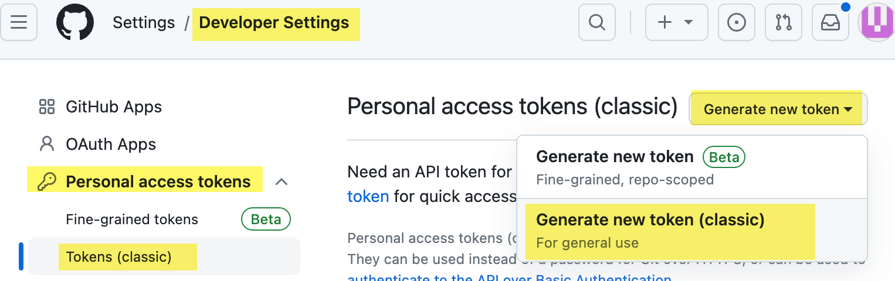

Caution
todo…
1 github action
以hugo 为例 正常我们的发布流程可能是这样 1. build 本地代码 生成静态文件 2. 上传到服务器 (比如scp操作) 3. 域名配置 比如nginx
github action 就是启动一个小的虚拟机,发现你push后,就做某些操作 ,比如build 和scp 的操作
# 1. 当前git仓库中 创建.github/workflows/ 目录
mkdir -p .github/workflows/
touch .github/workflows/learn-github-actions.ymllearn-github-actions.yml
name: learn-github-actions
run-name: ${{ github.actor }} is learning GitHub Actions
on: [push] # 当有push 推送时 会触发我们的job
jobs:
check-bats-version: # 这个你你的任务的名字, 随便起, 当然我们起一个能表明任务的名字..
# 将作业配置为在最新版本的 Ubuntu Linux 运行器上运行。
# 这意味着该作业将在 GitHub 托管的新虚拟机上执行
runs-on: ubuntu-latest
steps:
# uses 关键字指定此步骤将运行 actions/checkout 操作的 v3
# 我们可以从字面上看出这是一个 git checkout 仓库的操作.
# 将仓库 checkout到运行器(虚拟机)上
- uses: actions/checkout@v3 #
# checkout 代码后, 然后这里是安装 node
- uses: actions/setup-node@v3
with:
node-version: '14' # 安装的版本是14
- run: npm install -g bats # 执行命令
- run: bats -von: [push] 指定分支的push发生时 官方文档
uses: actions/checkout@v3实际是个github仓库哦 https://github.com/actions/checkout
https://github.com/peaceiris/actions-hugo https://github.com/peaceiris/actions-gh-pages
my_repo/nav_src hugo博客源码, 然后我想要push后,自动build 生成静态文件,发布到另外一个仓库中
hugo.yml
name: Hugo Actions
on:
push:
branches:
- main # 这里的意思是当 main 分支发生 push 的时候，运行下面的 jobs
jobs:
deploy:
runs-on: ubuntu-latest
steps:
- uses: actions/checkout@v3
# with:
# submodules: true # Fetch submodule
# fetch-depth: 0
- name: Setup Hugo
uses: peaceiris/actions-hugo@v2 # hugo官方的action, 安装hugo
with:
hugo-version: '0.110.0' # 安装指定版本的hugo
- name: Build
run: hugo --minify # 使用hugo生成静态网页
- name: Deploy To another repository # 部署至其他仓库,也可以是其他分支
uses: peaceiris/actions-gh-pages@v3 # hugo官方提供的自动发布github pages的action
with:
external_repository: my_repo/nav # 发布到哪个repo
personal_token: ${{ secrets.PERSONAL_ACCESS_TOKEN }}
# hugo 生成的静态文件在 public 目录, 这里的意思是 要发布 public 文件夹里的内容
publish_dir: ./public
publish_branch: main # 发布到哪个分支
force_orphan: true
full_commit_message: ${{ github.event.head_commit.message }}
将hugo.yml中的PERSONAL_ACCESS_TOKEN改成你设置的NAME
创建 Personal_Access_Token： 
- Note: 给token 描述
- Expiration: No expiration
- Select scopes: 全选
生成后, 复制token
目标仓库 设置 Personal_Access_Token：
打开目标仓库页面 -> 点击Settings -> Security -> Secrets and variables -> Actions，选择 New repository secret ->设置一个名字 NAME (比如 DEPLOY2NAV) -> 粘贴前面生成的 personal_access_token
将hugo.yml 里的 PERSONAL_ACCESS_TOKEN 改成DEPLOY2NAV
push 后去看 my_repo/nav_src 仓库的 Actions ,看执行的命令情况. 成功的话,会在 my_repo/nav仓库里看到静态页面.